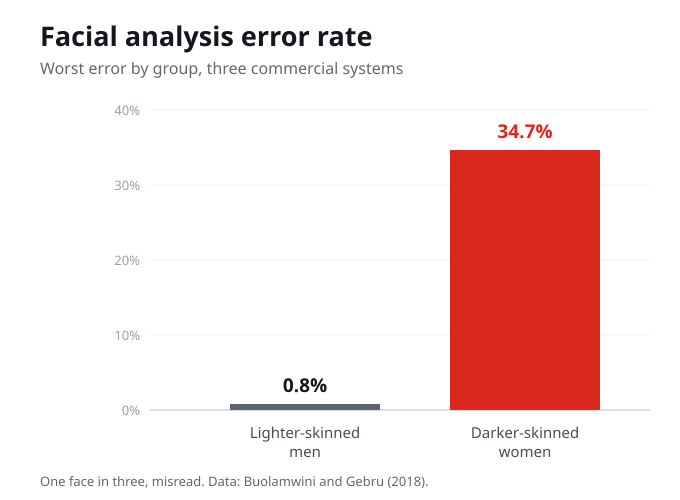
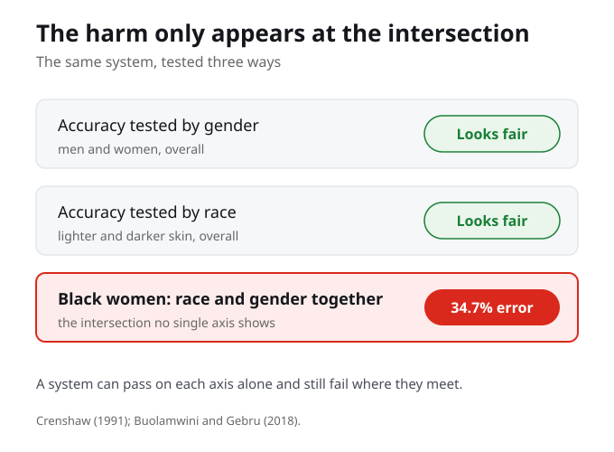
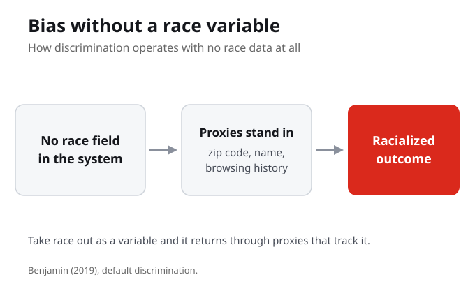
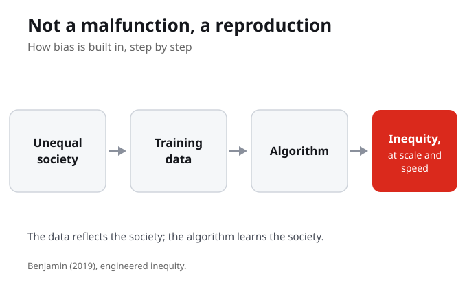

1. In the Gender Shades study, the error rate for darker-skinned women was closest to:
2. Intersectional bias means that a system can:
3. Default discrimination, as Ruha Benjamin uses it, requires:
4. Engineered inequity describes bias that is:
5. A proxy variable is something like a zip code or a name that:
6. In Ewert v Canada (2018), the Supreme Court found that risk assessment tools:
7. The phrase the New Jim Code is associated with which scholar:
This week moves from naming the problem to measuring it. We examine how algorithmic systems encode and scale racial bias, why those failures are structural rather than accidental, and what the evidence looks like once it is disaggregated by race and gender.
By the end of this week you should be able to

Buolamwini and Gebru tested three commercial facial analysis systems. For lighter-skinned men, error rates were as low as 0.8%. For darker-skinned women, 34.7%. One in three faces, misread. This was not a glitch. The systems learned from datasets that overrepresented lighter skin and male faces. The technology learned what it was taught: that some faces matter more than others.
A 0.8% error rate and a 34.7% error rate are not two versions of the same problem. They are evidence that the system was built for one group and tested on another.
If a system works perfectly for some people and fails for others, is the failure technical or political?

Crenshaw showed that race and gender do not operate independently. A Black woman's experience of discrimination is distinct from racism alone or sexism alone. Algorithmic systems are typically tested along single axes, so a system can perform well for women and for Black people yet fail for Black women. Buolamwini and Gebru disaggregated their data by skin type and gender. The intersection is where the catastrophic failures appeared.
Aggregate accuracy conceals intersectional harm. A system that is 93% accurate overall can still fail an entire subgroup at rates that would be unacceptable for any other population.

Benjamin calls this default discrimination: technology treats whiteness as the baseline, and everything else as deviation. Bias persists even in systems that never use race as a variable. Zip codes, names, and browsing patterns serve as proxies. Beauty filters lighten skin. Soap dispensers cannot detect dark skin. Search engines associate Black names with criminal records. The system does not need to know your race to discriminate by it.
Default discrimination operates without intent and without awareness. That is what makes it structural rather than individual.
What does it mean for a technology to treat whiteness as the default? How would you recognize this in systems you use every day?

In Ewert v Canada (2018), the Supreme Court ruled that risk assessment tools used by Corrections Canada had not been validated for Indigenous offenders. The tools produced discriminatory outcomes rooted in colonial policing data. Amazon's hiring algorithm penalized resumes with the word "women's." A U.S. hospital algorithm underestimated the health needs of Black patients. The pattern is consistent: the system functions as designed, and the design reflects the society.
If the society that builds the system is unequal, the system will reproduce that inequality at scale and at speed. More technology does not solve the problem if the problem is structural.
Algorithmic discrimination intensifies at intersections of identity. A system that works for most groups can still fail catastrophically for those at the intersection of race and gender. Buolamwini and Gebru proved this empirically.
When whiteness is the unmarked default, bias does not require racist designers. Proxy variables like zip codes and names reproduce racial hierarchies without ever naming race.
Bias in technological systems is not a malfunction. It is a feature that emerges from the social context of design. The data reflects the society. The algorithm learns the society.
The Gender Shades study was published in 2018. By 2026, facial recognition is regulated but not banned in Canada. The gap between evidence and policy tells you whose safety the system prioritizes.
In Weeks 1 and 2, we established that technology is not neutral and that the New Jim Code operates through systems that appear objective while encoding racial hierarchies. We named the problem. This week, we measure it.
Buolamwini and Gebru's Gender Shades study moves the conversation from conceptual to empirical. We can now point to specific error rates, specific populations harmed, and specific systems that failed. Benjamin's chapters on Engineered Inequity and Default Discrimination explain why those failures are structural.
In the weeks to come, we move from understanding how bias operates to examining who resists it and how. If the problem is engineered, the question becomes: can it be un-engineered? And if so, by whom?
The New Jim Code is not abstract. It produces numbers: 0.8% and 34.7%. It produces legal rulings: Ewert v Canada. It produces consequences in policing, hiring, and health care. The thread from Week 1 to here is the move from theory to evidence.
Think of a technology you used today: a search engine, face unlock, a recommendation feed, a beauty filter. Whose data was it likely built on, and who might it misread? Write a few sentences on where you see the New Jim Code operating in your own day.
Your notes save automatically on this device and stay after you close your browser or shut down. Use Save my notes (below) to download a copy you can keep or open on another device.
A facial analysis system is 93 percent accurate overall but fails darker-skinned women far more often. The lesson is that:
Why is default discrimination called structural rather than individual?
Ewert v Canada shows engineered inequity because the tool:
Buolamwini and Gebru (2018), full paper. Focus on Table 1 (accuracy results), Section 4 (why disparities exist), and Section 5 (implications for commercial deployment). This is the evidence.
Race After Technology, pages 1 to 75. This is the framework that contextualizes the Gender Shades findings. Pay attention to how Benjamin connects design choices to structural outcomes.
Complete all components on Blackboard, including the Key Concepts, the In the News article, and the Reflection Corner.
KC1 covers Weeks 1 to 3: the New Jim Code, coded inequity, algorithmic bias, intersectionality, and default discrimination. Review your Key Concepts and connect them to specific examples.
Knowledge Check 1 covers Weeks 1 to 3. Review the Key Concepts from all three modules. Make sure you can connect each concept to a specific example from the readings. All submissions through Blackboard.
Benjamin, R. (2019). Race after technology: Abolitionist tools for the New Jim Code. Polity Press.
Buolamwini, J., & Gebru, T. (2018). Gender shades: Intersectional accuracy disparities in commercial gender classification. Proceedings of Machine Learning Research, 81, 1 to 15.
Crenshaw, K. W. (1991). Mapping the margins: Intersectionality, identity politics, and violence against women of color. Stanford Law Review, 43(6), 1241 to 1299.
Ewert v Canada, 2018 SCC 30.
Noble, S. U. (2018). Algorithms of oppression: How search engines reinforce racism. NYU Press.